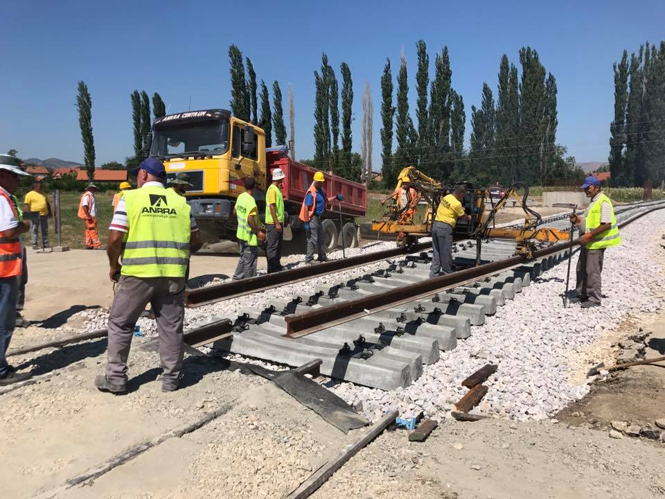
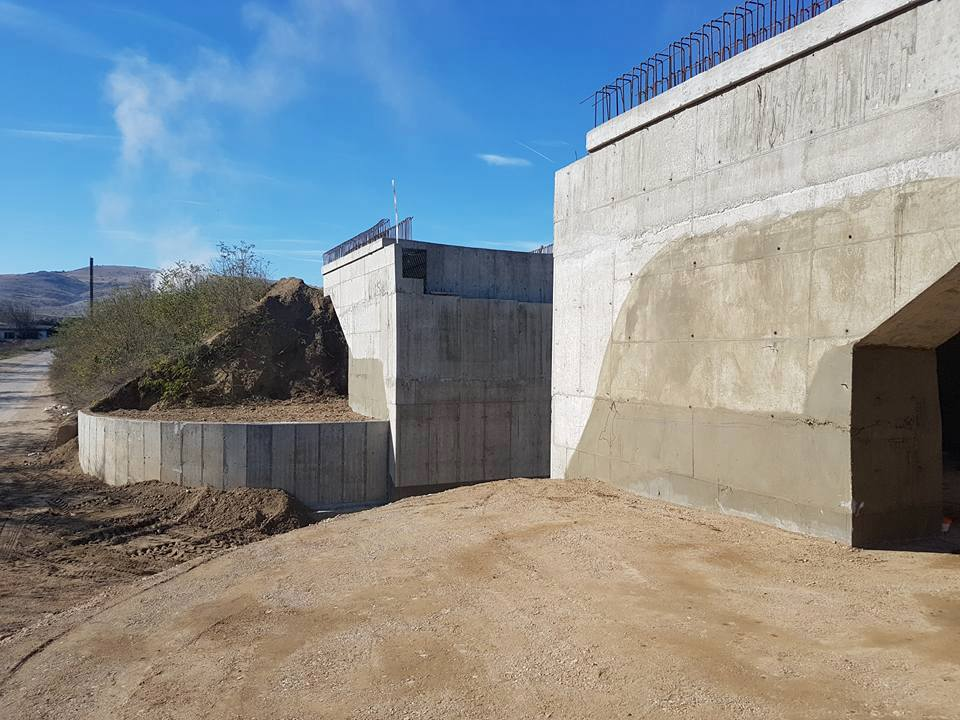
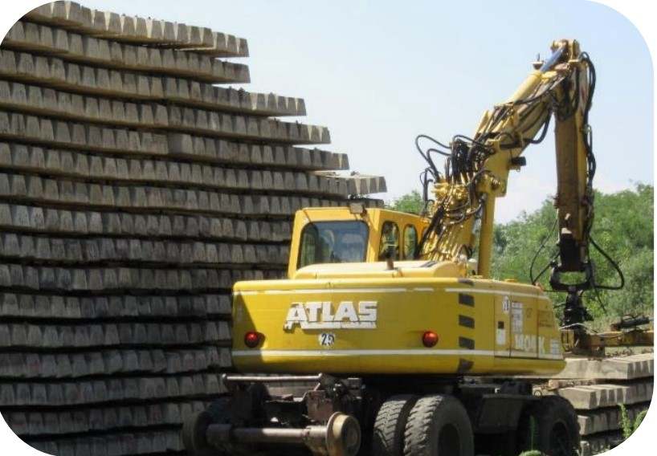

Проект: Железнички Коридор VIII, Рехабилитација на делница Куманово-Белаковце.
Договорен орган: Јавно претпријатие Железници на Република Северна Македонија
Опис на проектот:
Железничката делница од Куманово до Бељаковц е долга 30,8 километри и е прва од трите
општите делови од железничките пруги долж VIII меѓународен железнички коридор, кои
треба да ја поврзе Република Македонија со Република Бугарија, почнувајќи од
Куманово, минувајќи преку Бељаковце, Крива Палаке до Деве Баир, односно до границата со
Република Бугарија.
Завршени проекти



Проект: Железнички Коридор VIII, Рехабилитација на делница Куманово-Белаковцеy



Проект: Работи за обнова на пругата на делници Ногаевци - Неготино Железнички коридор X
Договорен орган: Јавно претпријатие Железници на Република Северна Македонија
Опис на проектот:
Овој проект е дел од паневропскиот коридор на Коридорот X со ширина од 31 км, а со
при реконструкцијата на овој дел, предвидено е возовите да се движат со поголема брзина до 120 км/ч.
